Review the treasury hedging deck on my desktop against the GBP/EUR rate quoted on the ECB euro reference rates page. Put your findings in the speaker notes of the slide that carries the wrong rate, then reply to the analyst's mail asking for the review with a clear approve-or-reject verdict and the correct rate.
THINKINGI'll help you review the treasury hedging deck against the ECB reference rate. Let me start by taking a screenshot to see the current state of the screen.
ACTIONI'll begin by examining the treasury hedging deck. Let me first take a screenshot to see the current state.
THINKINGThe deck is open in LibreOffice Impress. I see 6 slides. Slide 3 is titled "Reference Rates Used" which is most likely where the rate is. I need to read all slides' content to understand the deck. Let me zoom in to read the slides. First, let me look at slide 3 which mentions "GBP/EUR spot taken from ECB euro reference rates" - this is the key slide.
Let me click on slide 3 to read its details more closely.
ACTIONI can see the deck has 6 slides. Slide 3 ("Reference Rates Used") mentions the GBP/EUR spot from ECB rates, which is likely the key slide. Let me examine it more closely.
EXECUTED (pyautogui in VM)pyautogui.click(174, 517)
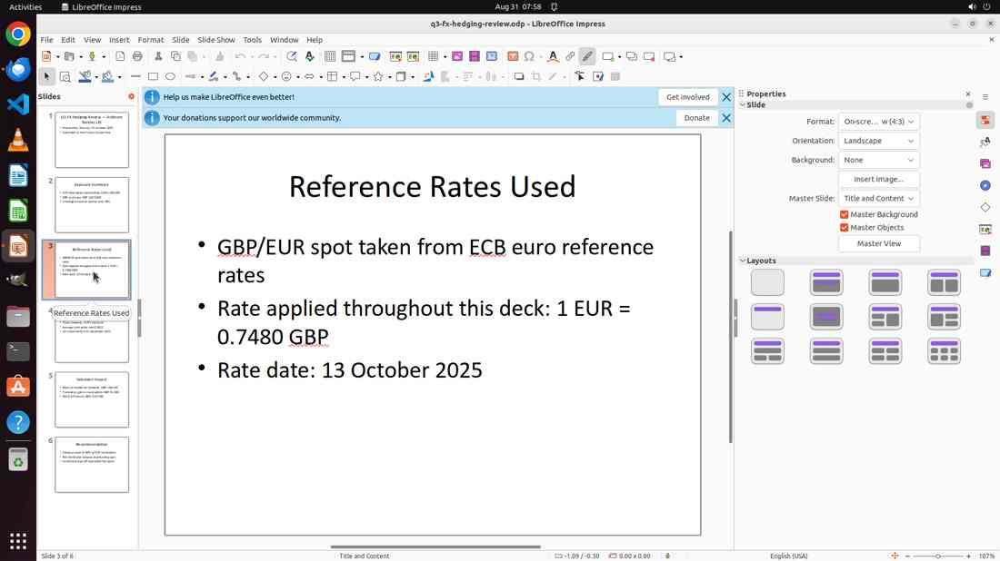
step 3 23:58:51
THINKINGSlide 3 "Reference Rates Used" states:
- GBP/EUR spot taken from ECB euro reference rates
- Rate applied throughout this deck: 1 EUR = 0.7480 GBP
- Rate date: 13 October 2025
So the deck uses 1 EUR = 0.7480 GBP, dated 13 October 2025. I need to check the ECB euro reference rates page for the GBP/EUR rate on that date.
The ECB publishes euro reference rates. The key thing: the rate date is 13 October 2025. I need to look up GBP rate for that date on ECB website. The ECB reference rate for GBP per euro on 13 October 2025.
Let me also check other slides to make sure the "wrong rate" slide is this one. But slide 3 is clearly the reference rate slide. Let me check the other slides briefly to confirm the deck consistently uses 0.7480 and this is the slide carrying the rate.
Actually, the task says "the slide that carries the wrong rate" - this is slide 3, which carries the reference rate. Let me now go to the ECB euro reference rates page to find the actual GBP/EUR rate for 13 October 2025.
Let me open Chrome to look up the ECB rate. Let me click the Chrome icon.
ACTIONSlide 3 carries the rate: **1 EUR = 0.7480 GBP**, dated **13 October 2025**. Now I need to verify this against the actual ECB euro reference rates page. Let me open Chrome to look up the GBP/EUR rate for that date.
THINKINGChrome is open. I'll navigate to the ECB euro reference rates page. The ECB publishes euro reference rates at the data page. The direct URL for historical euro reference rates is:
https://www.ecb.europa.eu/stats/policy_and_exchange_rates/euro_reference_exchange_rates/html/eurofxref-graph-gbp.en.html
That page shows GBP reference rates. But I need a specific date 13 October 2025. There's a table at:
https://www.ecb.europa.eu/stats/policy_and_exchange_rates/euro_reference_exchange_rates/html/eurofxref-gbp.en.html
Actually the main euro reference rates table page is:
https://www.ecb.europa.eu/stats/policy_and_exchange_rates/euro_reference_exchange_rates/html/index.en.html
Let me type the URL for the GBP graph page which lists daily values.
ACTIONChrome is open. Let me navigate to the ECB euro reference rates page for GBP.
EXECUTED (pyautogui in VM)pyautogui.click(993, 88)
step 5 23:59:12
THINKINGThe address bar is focused. I'll type the ECB euro reference rates table page URL. The standard page listing the euro reference exchange rates table is:
https://www.ecb.europa.eu/stats/policy_and_exchange_rates/euro_reference_exchange_rates/html/index.en.html
Let me type that and press Enter.
ACTIONThe address bar is focused. Let me navigate to the ECB euro reference exchange rates table page.
EXECUTED (pyautogui in VM)pyautogui.typewrite("https://www.ecb.europa.eu/stats/policy_and_exchange_rates/euro_reference_exchange_rates/html/index.en.html")
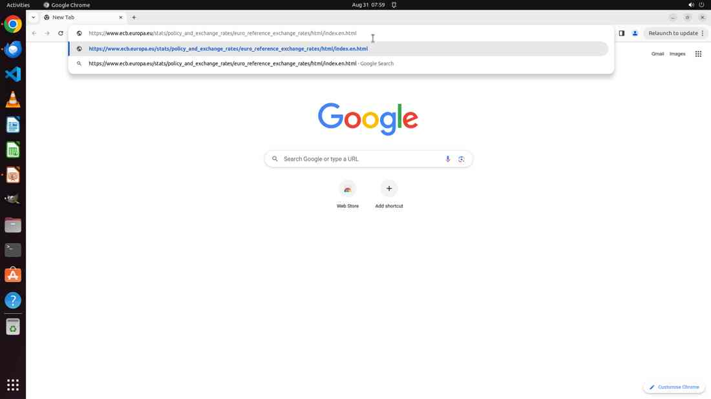
step 6 23:59:18
THINKINGThe URL is typed. Let me press Enter to navigate.
EXECUTED (pyautogui in VM)pyautogui.press("return")
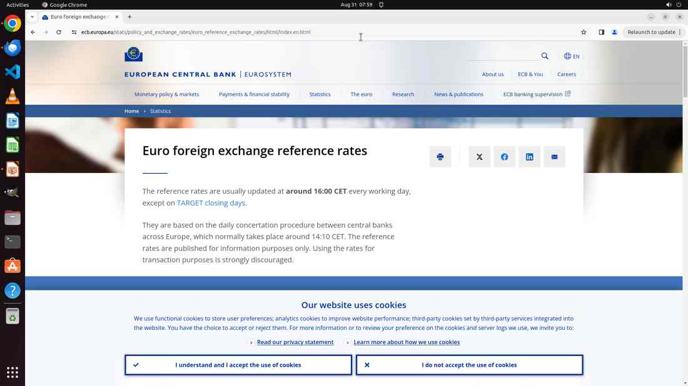
step 7 23:59:28
THINKINGThe ECB euro reference rates page loaded. There's a cookie banner. Let me accept cookies to dismiss it, then scroll down to find the GBP rate table for 13 October 2025.
ACTIONThe ECB page loaded. Let me accept the cookie banner to clear it, then scroll down to find the rate table.
EXECUTED (pyautogui in VM)pyautogui.click(661, 1020)
step 8 23:59:42
THINKINGThe cookie banner is dismissed. The page shows "28 August 2026" as the current reference rate date - the latest. But I need the rate for 13 October 2025. The main page only shows the latest. I need to look at the GBP-specific historical page which allows selecting a date, or the historical archive.
The GBP-specific page is:
https://www.ecb.europa.eu/stats/policy_and_exchange_rates/euro_reference_exchange_rates/html/eurofxref-gbp.en.html
That page shows the GBP reference rate table with a date selector. Let me navigate there. Actually, there is a "Graph" and a table with a date dropdown. Let me go to the GBP specific page which has the historical table.
Let me navigate to the eurofxref-gbp page.
ACTIONThe main page only shows the latest date (28 August 2026). I need the historical rate for 13 October 2025, so let me go to the GBP-specific reference rates page which has a date selector.
EXECUTED (pyautogui in VM)pyautogui.click(599, 88)
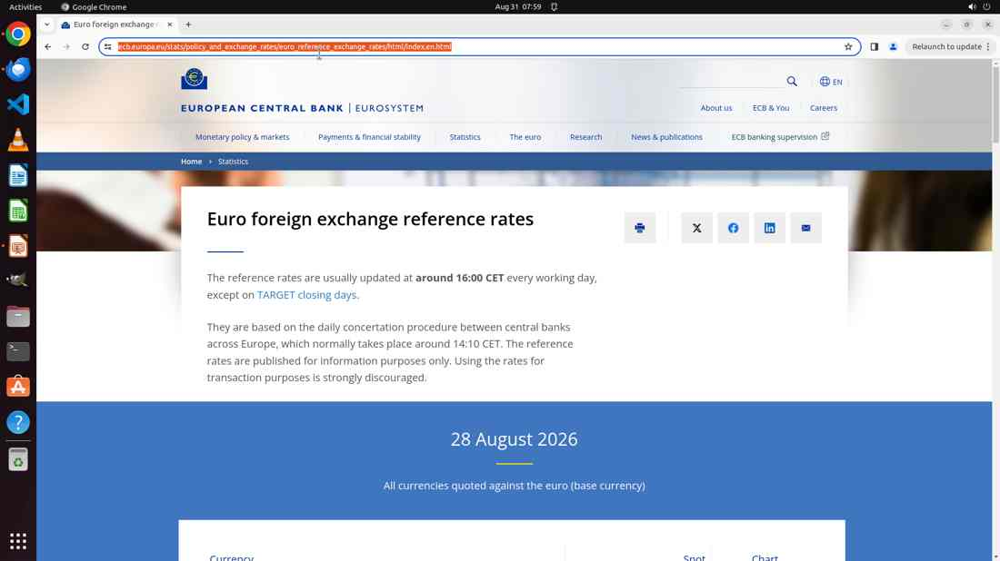
step 9 23:59:58
THINKINGThe URL is selected. Let me type the GBP-specific euro reference rate page URL. The correct URL pattern is:
https://www.ecb.europa.eu/stats/policy_and_exchange_rates/euro_reference_exchange_rates/html/eurofxref-gbp.en.html
EXECUTED (pyautogui in VM)pyautogui.typewrite("https://www.ecb.europa.eu/stats/policy_and_exchange_rates/euro_reference_exchange_rates/html/eurofxref-gbp.en.html")
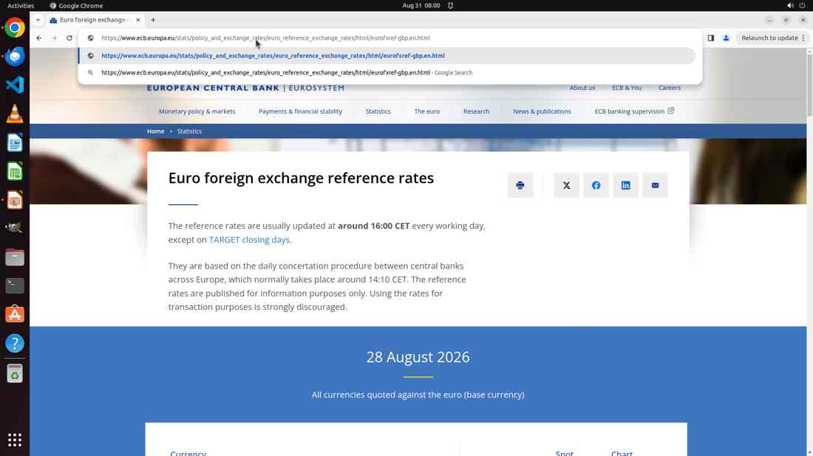
step 10 00:00:06
THINKINGThe URL is in the address bar. The page hasn't loaded yet (still shows previous). Let me press Enter to navigate.
EXECUTED (pyautogui in VM)pyautogui.press("return")
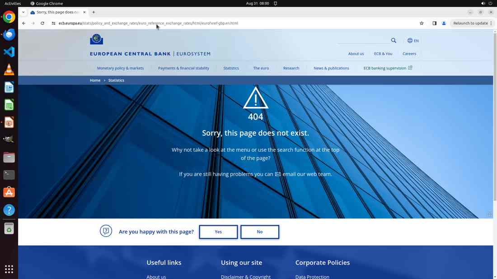
step 11 00:00:20
THINKING404 - that URL doesn't exist. The correct GBP page URL uses "eurofxref-graph-gbp" for the graph, but the table with a date dropdown is actually on the main index page. The main index page (index.en.html) I loaded earlier shows only the current date (28 Aug 2026).
Actually, the ECB euro reference rates index page has a link "Table" and the historical data is available through a separate interface. Let me reconsider. The main index page I loaded earlier had a table with "Currency", "Spot", "Chart" columns and a date of 28 Aug 2026. It may have a date selector. Let me go back to the index page and scroll to find a date selector / dropdown.
Actually, the historical euro reference rates are available at:
https://www.ecb.europa.eu/stats/policy_and_exchange_rates/euro_reference_exchange_rates/html/eurofxref-graph-gbp.en.html (graph, with a start date)
But for a specific historical date table, the index.en.html page might have a dropdown to select a date. Let me go back to the index page.
ACTIONThat URL doesn't exist. Let me go back to the main reference rates index page and scroll down to find a date selector for historical data.
THINKINGI'm back on the index page. It shows 28 August 2026 with a table below. I need to scroll down to find the GBP row and any date selector. Let me scroll down.
ACTIONLet me scroll down to see the currency table and any date selector.
EXECUTED (pyautogui in VM)pyautogui.moveTo(989, 600)
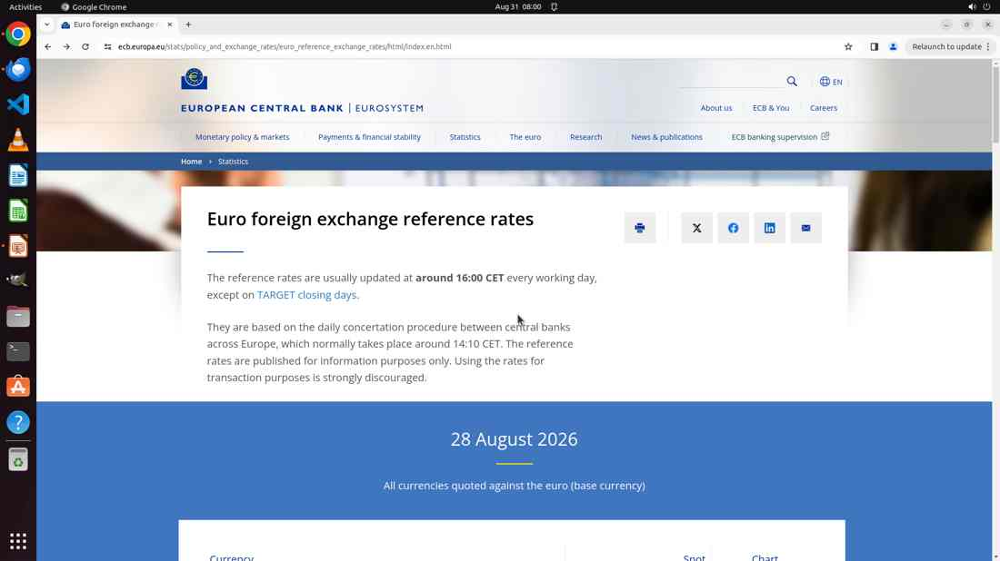
step 12.2 00:00:34
same model call as the previous action
EXECUTED (pyautogui in VM)pyautogui.scroll(-5)
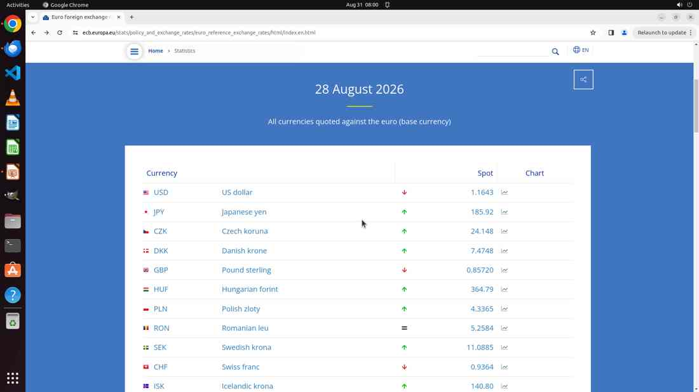
step 13 00:00:48
THINKINGI can see the table for 28 August 2026. GBP = 0.85720 (spot). But I need 13 October 2025. The GBP row has a "Chart" link. Clicking GBP or its chart might lead to a page with a date selector. Let me click on "GBP" link text to see if it leads to a page with date selection.
Actually the ECB index page doesn't easily let you pick a historical date. The historical euro reference rates data table with a date picker is available at a specific "Table" page. Let me click on the "GBP" link to navigate to the GBP page which historically has a start-date selector.
ACTIONI can see the current GBP spot is 0.85720 (28 Aug 2026). I need the historical rate for 13 October 2025. Let me click the "GBP" link, which should lead to a page with a date selector.
EXECUTED (pyautogui in VM)pyautogui.click(436, 740)
step 14.1 00:01:06
THINKINGThis is the GBP graph page (eurofxref-graph-gbp.en.html). It shows the current rate (28 Aug 2026) and a graph with a period selector and a "Select" dropdown for EUR vs GBP. There's also a "Table" view likely below. I need the exact GBP reference rate for 13 October 2025.
The best way to get the exact rate for a specific date is the "Table" view. This graph page has a Period selector with date fields. I can set the period to a specific date and the graph/table will show the value. But more reliably, I should find the "Table" tab which lists daily values.
Let me scroll down to see if there's a "Table" link/tab that lists the reference rates by date. Actually the ECB page typically has tabs: "Graph" and "Table". Let me scroll down.
ACTIONThis is the GBP page with a graph. I need the exact rate for 13 October 2025. Let me scroll down to find a Table view that lists daily rates.
EXECUTED (pyautogui in VM)pyautogui.moveTo(989, 600)
step 14.2 00:01:09
same model call as the previous action
EXECUTED (pyautogui in VM)pyautogui.scroll(-5)
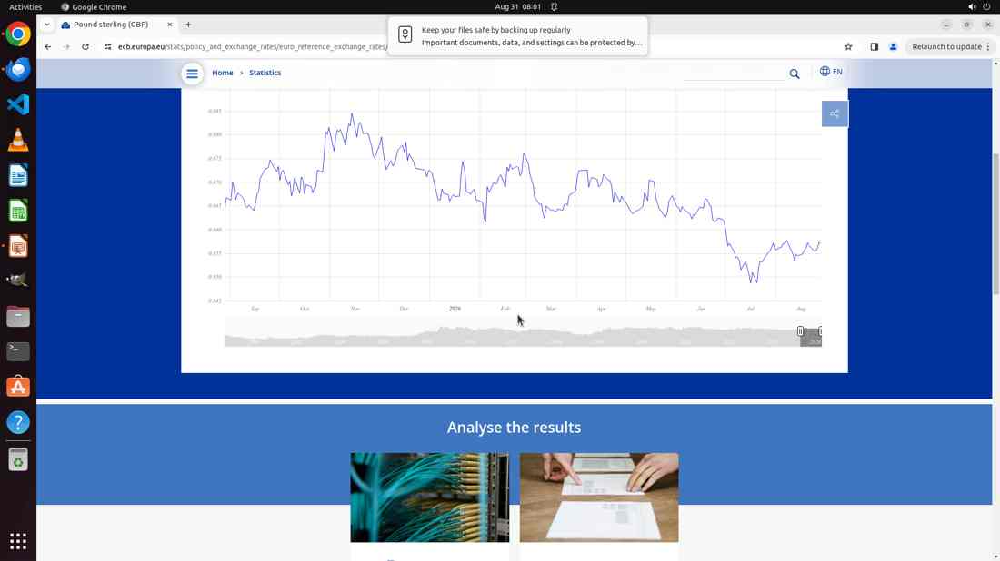
step 15.1 00:01:19
THINKINGThis is just a graph. There's no table view on this page. To get the exact rate for a specific date (13 Oct 2025), I should use the graph's Period selector to set the start and end to 13 October 2025, which would make the graph display that single date and the top value would show it.
Alternatively, the ECB provides data downloads. But the cleanest is to use the Period date selectors on the graph page. Let me scroll back up to the Period fields and set both dates to 13/10/2025. When start=end, the header value should show that date's rate.
Actually, a more reliable method: the ECB "Table" page. The historical euro reference rates table (with all dates) is at a different URL. But let me try the graph period approach first since I'm here.
Let me scroll up to access the Period fields.
ACTIONThis is just the graph. I'll use the Period date selectors to narrow to 13 October 2025 so the header shows that exact date's rate. Let me scroll back up to the Period fields.
EXECUTED (pyautogui in VM)pyautogui.moveTo(989, 600)
step 15.2 00:01:22
same model call as the previous action
EXECUTED (pyautogui in VM)pyautogui.scroll(5)
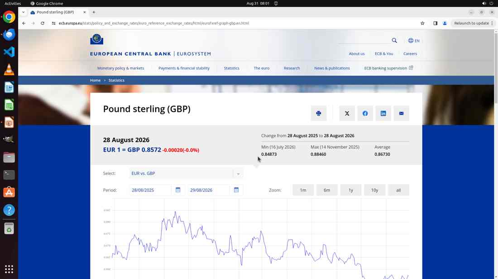
step 16 00:01:37
THINKINGI can see the Period fields: start "28/08/2025" and end "29/08/2026". I'll set both to 13/10/2025 so the graph shows that single date, and the header value should update to 13 October 2025 rate.
Let me set the start field. I'll click into it, clear it, and type 13/10/2025. Then the end field to 13/10/2025. The date field format appears to be DD/MM/YYYY. Let me triple-click the start field to select, then type.
ACTIONI see the Period fields. Let me set both start and end dates to 13/10/2025 so the graph shows that exact date's rate.
EXECUTED (pyautogui in VM)pyautogui.tripleClick(578, 734)
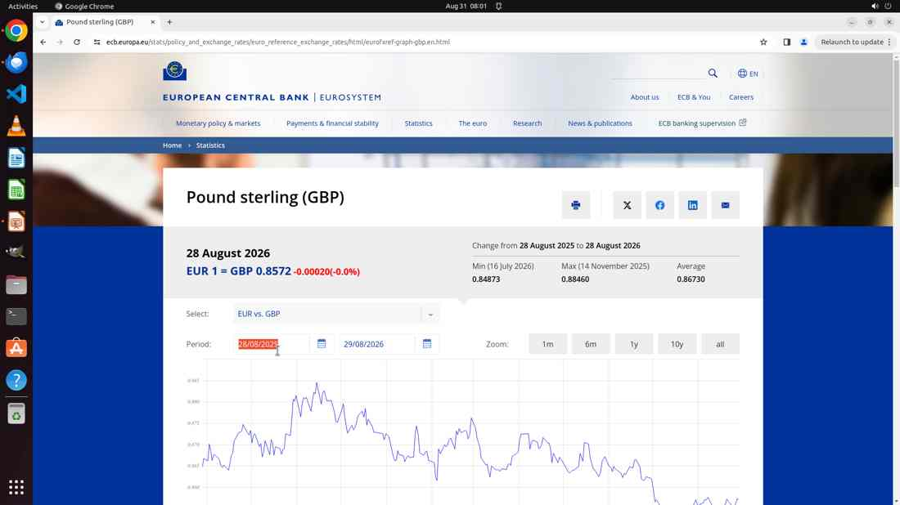
step 17 00:01:49
THINKINGThe start field is selected (highlighted "28/08/2025"). I'll type the new date. The format is DD/MM/YYYY. Let me type 13/10/2025, then tab to the end field, select all, and type 13/10/2025, then press Enter.
ACTIONThe start field is selected. Let me type the new start date, then update the end date to the same.
EXECUTED (pyautogui in VM)pyautogui.typewrite("13/10/2025")
step 18 00:02:02
THINKINGStart is now 13/10/2025. Now I need to set the end date to 13/10/2025 as well so the graph shows only that day. Let me triple-click the end field and type the date, then press Enter to apply.
ACTIONNow let me set the end date to 13/10/2025 and apply.
EXECUTED (pyautogui in VM)pyautogui.tripleClick(795, 734)
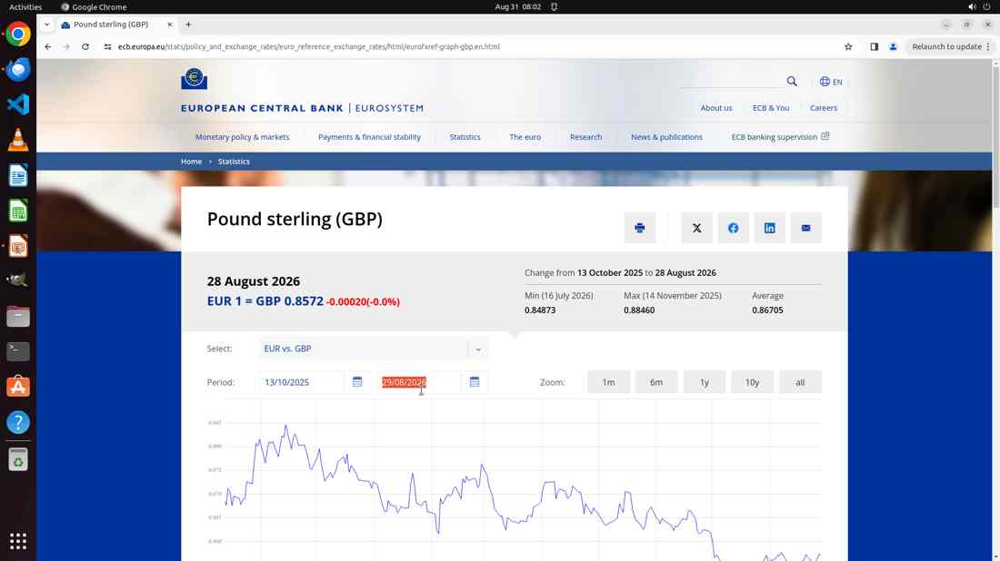
step 19 00:02:12
THINKINGThe start date applied (the "Change from" now reads "13 October 2025"). The end field is now selected. I'll type 13/10/2025 and press Enter. When start=end, the header should show the value for 13 October 2025.
ACTIONThe start date applied. Now the end field is selected. Let me type the end date and apply.
EXECUTED (pyautogui in VM)pyautogui.typewrite("13/10/2025")
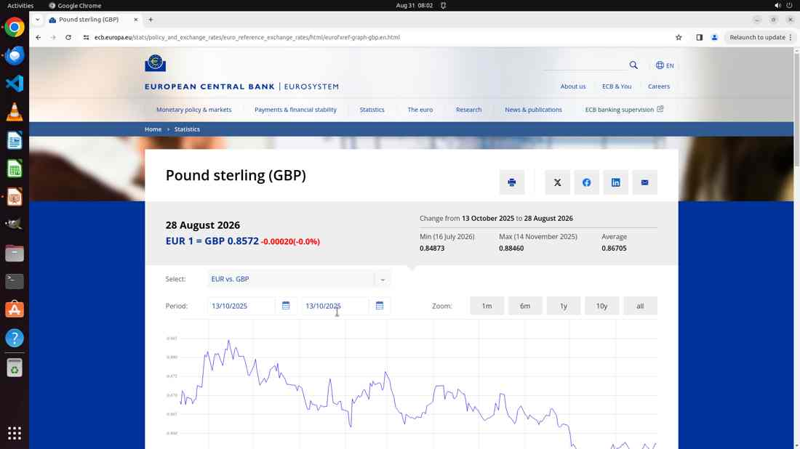
step 20 00:02:21
THINKINGBoth fields show 13/10/2025. Now I need to press Enter to apply so the graph/header updates to that single date. Let me press Enter and take a screenshot.
ACTIONBoth dates are set to 13/10/2025. Let me press Enter to apply and see the rate for that date.
EXECUTED (pyautogui in VM)pyautogui.press("return")
step 21 00:02:38
THINKINGNow the graph is zoomed to the single date 13 October 2025. The stats box now reads:
- Change from 13 October 2025 to 13 October 2025
- Min (13 October 2025) 0.86770
- Max (13 October 2025) 0.86770
- Average 0.86770
So the ECB euro reference rate for GBP on 13 October 2025 is EUR 1 = GBP 0.86770.
The deck uses 1 EUR = 0.7480 GBP. That's wrong. The correct rate is 0.86770 (EUR 1 = 0.8677 GBP).
So the finding:
- Deck (slide 3): 1 EUR = 0.7480 GBP
- ECB reference rate 13 Oct 2025: 1 EUR = 0.8677 GBP
- The deck rate is incorrect.
The verdict is REJECT.
Now let me verify this by confirming the number. The min/max/average all show 0.86770 for that single date, which is reliable.
Now I need to:
1. Add speaker notes to slide 3 (the slide carrying the wrong rate) with my findings.
2. Reply to the analyst's email asking for the review, with a clear reject verdict and the correct rate.
Let me first go back to LibreOffice Impress to add the speaker notes to slide 3. Let me switch to the Impress window. I'll click the LibreOffice Impress icon in the taskbar (the orange one at ~23,315) or use the window switcher.
Actually, let me first re-confirm the deck's exact stated rate on slide 3. Earlier I only clicked slide 3 in the filmstrip but I recall it said 0.7480 dated 13 October 2025. Let me go back and verify by reading slide 3 carefully, then add notes.
Let me switch to Impress.
ACTIONThe graph is now zoomed to the single date **13 October 2025**, and the stats box shows Min = Max = Average = **0.86770** for that date. So the ECB euro reference rate for GBP on 13 October 2025 is **EUR 1 = GBP 0.86770**.
The deck states **1 EUR = 0.7480 GBP** for that same date — that is the wrong rate. Let me switch back to Impress to verify slide 3 and add the findings to its speaker notes.
EXECUTED (pyautogui in VM)pyautogui.click(32, 470)
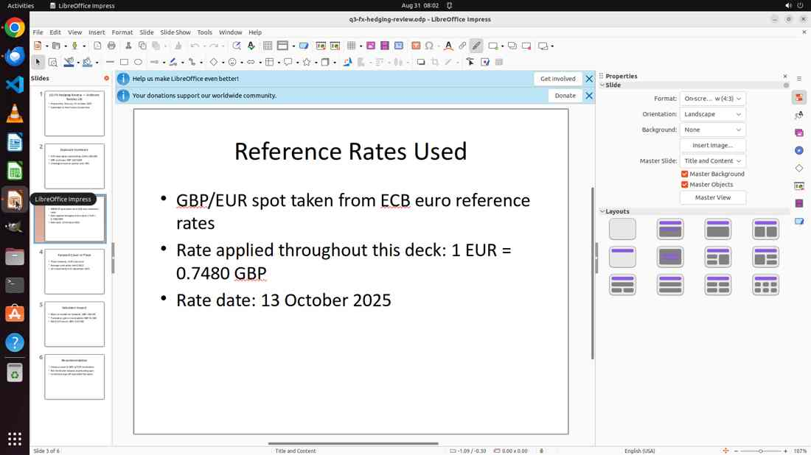
step 22 00:03:06
THINKINGConfirmed. Slide 3 "Reference Rates Used":
- GBP/EUR spot taken from ECB euro reference rates
- Rate applied throughout this deck: 1 EUR = 0.7480 GBP
- Rate date: 13 October 2025
This is the slide carrying the wrong rate. The correct ECB rate for 13 October 2025 is 1 EUR = 0.86770 GBP.
Now I'll add speaker notes to this slide. The notes area is at the bottom of the editing view, but currently the Notes panel isn't visible (the status bar is at bottom). I need to enable the Notes view or use the notes pane. In Impress, I can go to View > Notes, or there's a notes pane below the slide if I switch to "Normal" view with notes shown.
The simplest reliable approach: use the View menu to ensure the Notes pane is visible. Actually, in the Normal view, there's often a "Click to add notes" area below the slide. But here the slide fills the whole editing area and I don't see a notes pane. Let me use View menu > Notes to open notes editing, or better, use the notes pane.
Actually a cleaner method: The bottom of the Impress window normally has a notes area. It may be hidden. Let me check the View menu for a "Notes" option or enable the notes pane. Let me click View menu.
Actually, the most reliable way to add notes is: click on the slide, then View > Notes, which switches to Notes view where I can type in the notes area. Then switch back.
Let me first close the notification banners (Get involved / Donate) to clean up. Then use View > Notes.
Let me click View menu.
ACTIONConfirmed — slide 3 states **1 EUR = 0.7480 GBP** for 13 October 2025, while the ECB reference rate is **0.86770**. This is the slide with the wrong rate. Let me open the Notes view to add my findings. First I'll dismiss the notification banners.
EXECUTED (pyautogui in VM)pyautogui.click(201, 150)
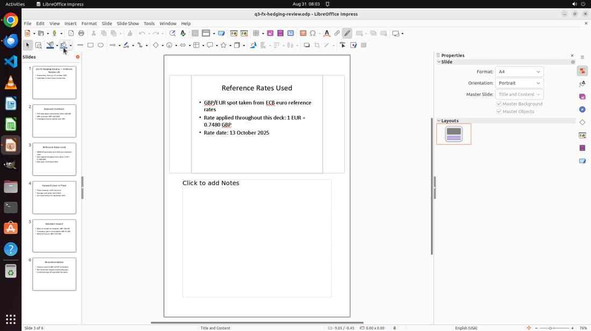
step 26 00:03:49
THINKINGNow I'm in Notes view for slide 3. There's a "Click to add Notes" area. Let me click into it and type my findings.
I'll write a clear note describing the finding: the deck rate is wrong, the correct ECB rate, and the verdict.
Let me click the notes area and type.
ACTIONI'm in Notes view for slide 3. Let me click into the notes area and type my findings.
EXECUTED (pyautogui in VM)pyautogui.click(830, 628)
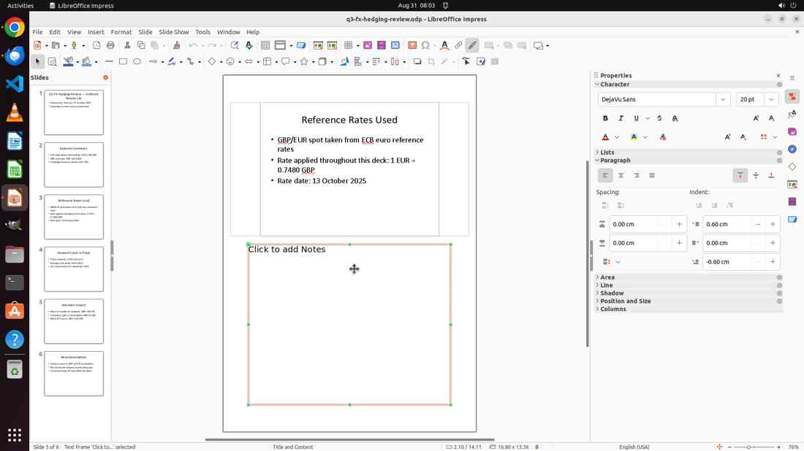
step 27 00:04:01
THINKINGThe text frame is selected (single click selects the frame). I need to double-click or click again to enter text editing mode. The status bar says "Text Frame 'Click to...' selected". Let me double-click into it to enter edit mode, then type.
ACTIONThe notes text frame is selected. Let me double-click to enter text editing mode, then type my findings.
EXECUTED (pyautogui in VM)pyautogui.doubleClick(830, 628)
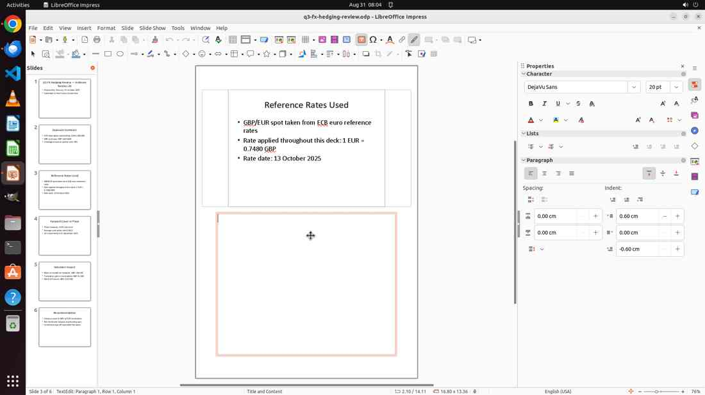
step 28 00:04:20
THINKINGNow I'm in text edit mode (status bar: "TextEdit: Paragraph 1, Row 1, Column 1"). The cursor is blinking in the notes area. Let me type my findings clearly.
I'll write:
"REVIEW FINDING (GBP/EUR rate): The rate on this slide is WRONG.
- Rate stated on slide: 1 EUR = 0.7480 GBP (dated 13 October 2025).
- Verified against ECB euro reference rates: GBP reference rate for 13 October 2025 = 1 EUR = 0.86770 GBP.
- The deck rate (0.7480) understates GBP per EUR and is inconsistent with the ECB euro reference rate for the stated date.
- Correct rate to use: 1 EUR = 0.86770 GBP.
Verdict: REJECT — rate must be corrected to 0.86770."
Let me type this. I'll keep it concise but clear.
ACTIONI'm now in text edit mode in the notes area. Let me type my findings.
TOOL CALL<tool_call>
<function=computer_use>
<parameter=action>
type
</parameter>
<parameter=text>
REVIEW FINDING (GBP/EUR rate) - THIS SLIDE CARRIES THE WRONG RATE.
- Rate stated on this slide: 1 EUR = 0.7480 GBP, dated 13 October 2025.
- Verified against the ECB euro reference rates page: GBP reference rate for 13 October 2025 = 1 EUR = 0.86770 GBP.
- The deck's rate (0.7480) does not match the ECB euro reference rate for the stated date and understates GBP per EUR, so any figures derived from it are incorrect.
- Correct rate to use: 1 EUR = 0.86770 GBP (13 October 2025).
Verdict: REJECT - rate must be corrected to 0.86770 before this deck is relied upon.
</parameter>
</function>
</tool_call>
EXECUTED (pyautogui in VM)pyautogui.typewrite("REVIEW FINDING (GBP/EUR rate) - THIS SLIDE CARRIES THE WRONG RATE.\n- Rate stated on this slide: 1 EUR = 0.7480 GBP, dated 13 October 2025.\n- Verified against the ECB euro reference rates page: GBP reference rate for 13 October 2025 = 1 EUR = 0.86770 GBP.\n- The deck's rate (0.7480) does not match the ECB euro reference rate for the stated date and understates GBP per EUR, so any figures derived from it are incorrect.\n- Correct rate to use: 1 EUR = 0.86770 GBP (13 October 2025).\nVerdict: REJECT - rate must be corrected to 0.86770 before this deck is relied upon.")
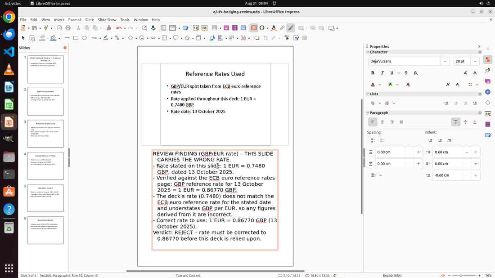
step 29 00:04:31
THINKINGThe notes are typed. Now I need to save the file to persist the notes. Since it's a .odp file, Ctrl+S will save it (may prompt to keep format). Let me click outside the notes frame first to deselect, then save.
Actually, the task says "Put your findings in the speaker notes". Saving is prudent so the change persists. Let me save with Ctrl+S and keep ODF format.
ACTIONThe findings are now in the speaker notes of slide 3. Let me save the file to persist the changes.
THINKINGThe notes text frame now shows "REVIEW F..." and is deselected (selected as a frame). Let me press Escape again to fully deselect, then save with Ctrl+S. A "Keep Current Format" dialog will likely appear for ODF. I'll click "Use ODF Format!" / keep format.
THINKINGNotes are in place and the frame is deselected. Now let me save with Ctrl+S. A dialog asking about format will likely appear; I'll keep ODF format.
ACTIONThe notes are saved into the slide. Now let me save the file with Ctrl+S.
EXECUTED (pyautogui in VM)pyautogui.hotkey("ctrl", "s")
step 32 00:05:05
THINKINGNo format dialog appeared — the file may have saved directly, or the dialog is pending. Let me wait a moment and take a screenshot to check if a "Keep format" dialog appears.
ACTIONLet me take a screenshot to check whether a format dialog appeared.
THINKINGNo dialog appeared. The file was likely saved directly as ODF (since .odp is native, no format prompt is needed). The document has been saved with the notes.
Now I need to reply to the analyst's email. Let me open the Thunderbird mail client (the blue bird icon in the taskbar). I need to find the email asking for the review, reply with a clear reject verdict and the correct rate (0.86770).
Let me click the Thunderbird icon.
ACTIONThe file saved without a format prompt (ODF is native). The notes are complete. Now I need to reply to the analyst's email. Let me open the mail client (Thunderbird).
EXECUTED (pyautogui in VM)pyautogui.click(32, 130)
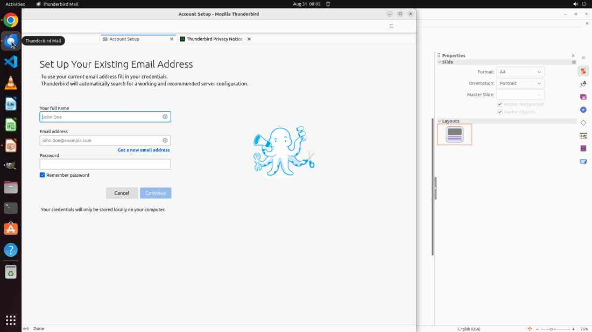
step 34 00:05:28
THINKINGThunderbird opened to an Account Setup screen, not an existing mailbox. This is the "Set Up Your Existing Email Address" wizard. This suggests Thunderbird has no configured account, OR it's showing setup for a new account. But the task says "reply to the analyst's mail asking for the review" — implying there's an existing mailbox with the analyst's email.
Perhaps the account is already set up and I just need to dismiss this setup tab. There's a "Thunderbird Mail" tab at the top-left and "Account Setup" tab. Let me close the Account Setup tab and check the main Thunderbird Mail tab. Actually, the "Thunderbird Mail" tab is the main window tab; the "Account Setup" is a secondary tab. Let me close the Account Setup tab by clicking its X, or click the "Thunderbird Mail" tab.
Wait, this is the initial account setup screen meaning no account exists. But the task assumes an email from an analyst exists. Maybe the account is set up and this is just a startup tab. Let me close this Account Setup tab (X at 369,85) to see the main mail view.
ACTIONThunderbird opened to an account setup screen. There may already be a configured mailbox behind this. Let me close the Account Setup tab to reveal the main mail view.
EXECUTED (pyautogui in VM)pyautogui.click(551, 126)
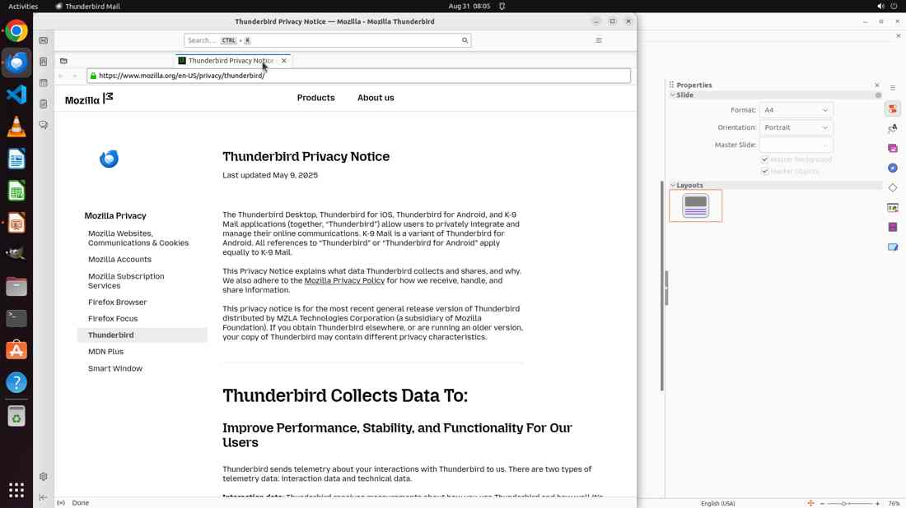
step 35 00:05:38
THINKINGNow the Account Setup tab closed, leaving a "Thunderbird Privacy Notice" web tab. There's a left sidebar with mail icons. I see the mail icon at top-left (~62,57). This suggests there is a mail account. Let me click the mail icon (top of the vertical toolbar on the far left, ~62,57) to open the Inbox.
ACTIONThere's a mail area with a left sidebar. Let me click the Mail (inbox) icon on the far-left toolbar to open the inbox.
THINKINGThis is the "Home" tab showing "Welcome to Freedom". The left folder pane (below "New Message") is empty — no folders like Inbox are visible, which strongly suggests no email account is configured yet. This Thunderbird has no account set up.
This is a problem: the task asks to "reply to the analyst's mail asking for the review." If there's no email account/mailbox with the analyst's email, I can't reply. But maybe there IS an account and I need to look. The folder pane appears empty (white). Let me check by looking more carefully. The area to the left under "New Message" is empty/white.
Wait — maybe the account exists but the folder pane just isn't showing. Let me check via the menu. Actually, the "Home" screen is the default when no account folders are visible. Let me check if there's a folder pane by looking. The pane between the toolbar and the message list (roughly x=75-245) is empty.
This means Thunderbird has no configured account. The email from the analyst might be accessible another way — perhaps via a local folder, or the email is stored elsewhere. But typically these OSWorld tasks have a configured mail account.
Let me reconsider. Perhaps I closed something or the account needs to be selected. Let me look at the top-left "Thunderbird Mail" tab and the folder tree. Actually the folder pane is empty.
Maybe the account IS configured but this "Home" view hides it. Let me click on the folder list area. Actually, let me check whether there's a global menu with the account. Let me try clicking in the empty folder pane region to see if folders appear. Or, let me look for a "Local Folders" - it's missing.
Hmm. Let me re-examine: the account setup wizard appeared on first launch, which usually means NO account. But the task explicitly requires replying to an analyst's email. Perhaps the email is in a local mbox or the account is set up but not shown on Home.
Let me try the menu (hamburger at 847,57) to see "Account Settings" to check if an account exists.
ACTIONThe mail Home view shows an empty folder pane, suggesting no account may be visible here. Let me open the menu to check the account status.
EXECUTED (pyautogui in VM)pyautogui.click(1270, 83)
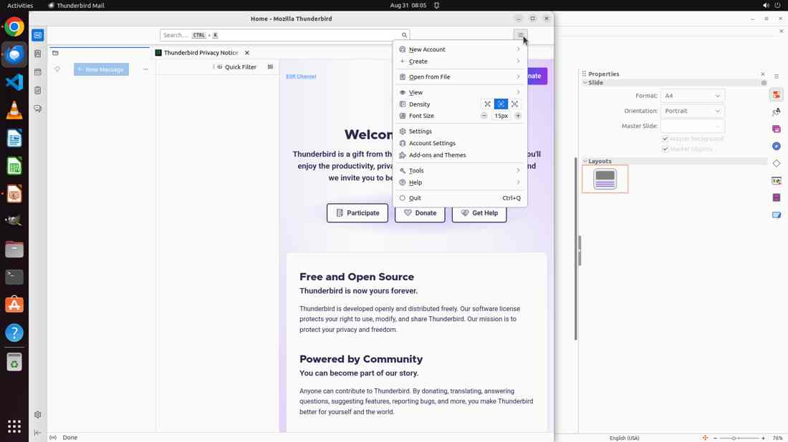
step 37 00:06:02
THINKINGThe menu shows "New Account", "Create", "Open from File", "Account Settings". Let me click "Account Settings" to see if an account already exists with the analyst's mail.
ACTIONLet me open Account Settings to check whether a mailbox account is configured.
EXECUTED (pyautogui in VM)pyautogui.click(1051, 347)
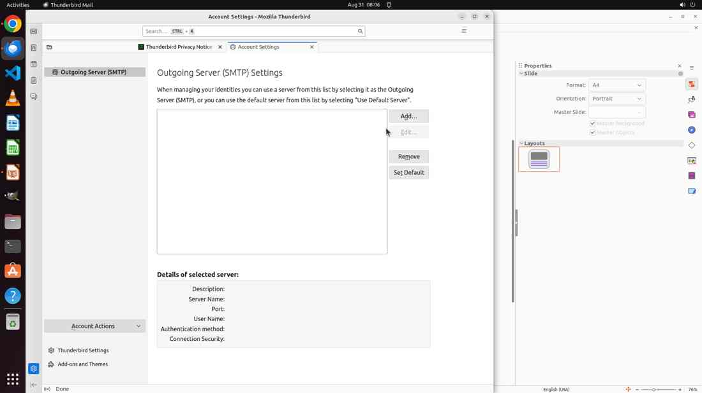
step 38 00:06:21
THINKINGThe Account Settings shows only "Outgoing Server (SMTP)" with an empty list, and no incoming mail accounts in the left pane (which normally would list "Mail & Newsserver Accounts" with the account name). The left pane only shows "Outgoing Server (SMTP)", "Thunderbird Settings", "Add-ons and Themes". There's NO email account configured.
This means Thunderbird has no mail account. The analyst's email isn't in Thunderbird.
So where is the analyst's mail? The task says "reply to the analyst's mail asking for the review." Perhaps the email is in a local folder that needs to be opened, or perhaps the mail is stored as an .eml/.mbox file on the desktop/home that I need to open.
Let me reconsider. Maybe there's a "Local Folders" that's hidden. But the account settings left pane typically lists the account under "Mail & Newsserver Accounts". It's empty here.
Alternative: The email might be accessible via a file on disk. Let me check the home directory / desktop for email files (.eml, .mbox). Let me open the Files application or a terminal to look.
Actually, let me reconsider the whole environment. This is an OSWorld-style task. Often the mail is a local mbox in a "Local Folders" account that Thunderbird can show. But it's not showing.
Let me close this and check the folder pane more carefully. Actually, wait — maybe there IS a local folders account but the SMTP pane is what's shown. The left pane top item is "Outgoing Server (SMTP)" which is a fixed item. Below it should be "Mail & Newsserver Accounts" section listing accounts. It's not there, meaning no mail account.
Let me look at the file system. Let me open a terminal and search for email files. Let me use the terminal app in the taskbar (the black icon at ~23,452).
ACTIONThere's no mail account configured in Thunderbird (the account pane only shows SMTP, no mailbox). The analyst's email may be stored as a file (e.g., .eml/.mbox) that I need to open. Let me check the filesystem via a terminal.
EXECUTED (pyautogui in VM)pyautogui.click(32, 677)
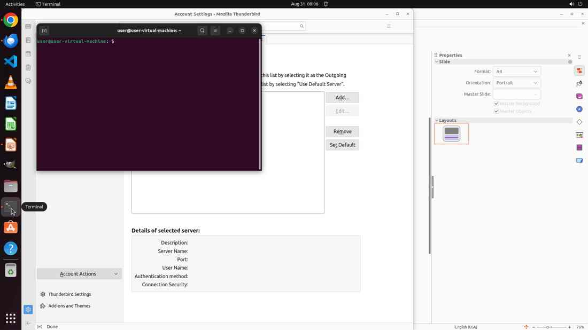
step 39 00:06:32
THINKINGA terminal opened. Let me search for email-related files and the Thunderbird profile. Let me look for the desktop deck file, and any email files (.eml, .mbox), and check the Thunderbird profile to understand if an account exists.
Let me run a few commands to explore. First, let me look at the home directory, Desktop, and search for eml/mbox files, and check the Thunderbird profile prefs.
ACTIONA terminal is open. Let me explore the filesystem for the email files and the Thunderbird profile.
EXECUTED (pyautogui in VM)pyautogui.click(480, 299)
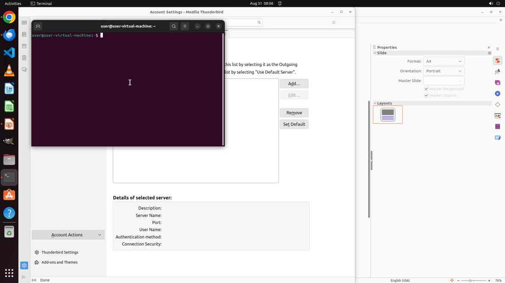
step 40 00:06:41
THINKINGThe terminal is focused. Let me run exploration commands to find the deck file and any email files. I'll list the Desktop, home, and search for eml/mbox files and check the Thunderbird profile.
TOOL CALL<tool_call>
<function=computer_use>
<parameter=action>
type
</parameter>
<parameter=text>
ls -la ~/Desktop/ ; echo '---THB---'; ls -la ~/.thunderbird/ 2>/dev/null ; echo '---EMLS---'; find /home/user -iname '*.eml' -o -iname '*.mbox' 2>/dev/null | head
</parameter>
</function>
</tool_call>
EXECUTED (pyautogui in VM)pyautogui.press("return")
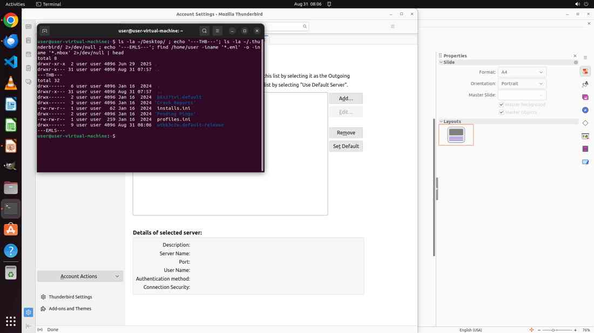
step 42 00:07:08
THINKINGInteresting. The output:
- `ls -la ~/Desktop/` returned "total 8" with just . and .. — the Desktop directory is EMPTY! But the deck is open in Impress as "q3-fx-hedging-review.odp". So the deck isn't on the Desktop; it's elsewhere (opened from somewhere else).
- Thunderbird profile: `wtkk3c2w.default-release` exists.
- No .eml or .mbox files found in /home/user (the EMLS section returned nothing).
So the desktop is empty. The deck was opened from somewhere. Let me find the deck file and also look inside the Thunderbird profile for local mail (Local Folders). The Thunderbird profile "wtkk3c2w.default-release" would contain a "Mail" folder with "Local Folders" and any mail.
But wait — Thunderbird showed no account and empty folder pane. However, there might be a Local Folders account with mail. Let me check the profile's Mail directory and the prefs.js for accounts.
Actually, the key question: where is the analyst's email? Let me search more broadly — maybe the mail is in the Thunderbird profile Local Folders, or maybe there's an email somewhere. Let me look inside the Thunderbird profile.
Let me run:
find ~/.thunderbird -type f | grep -iE 'mbox|Mail/|Inbox'
and check prefs.js for mail.identity / account.
And find the deck file.
ACTIONThe Desktop is empty and the deck was opened from elsewhere. Let me locate the deck file and inspect the Thunderbird profile for any stored mail (Local Folders).
TOOL CALL<tool_call>
<function=computer_use>
<parameter=action>
type
</parameter>
<parameter=text>
find / -iname 'q3-fx-hedging*' 2>/dev/null; echo '---MAIL---'; find ~/.thunderbird -type d -iname 'Local Folders' 2>/dev/null; ls -R ~/.thunderbird/wtkk3c2w.default-release/Mail 2>/dev/null | head -40
</parameter>
</function>
</tool_call>
EXECUTED (pyautogui in VM)pyautogui.typewrite("find / -iname 'q3-fx-hedging*' 2>/dev/null; echo '---MAIL---'; find ~/.thunderbird -type d -iname 'Local Folders' 2>/dev/null; ls -R ~/.thunderbird/wtkk3c2w.default-release/Mail 2>/dev/null | head -40")
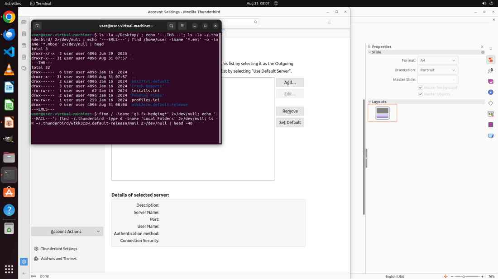
step 43 00:07:22
THINKINGCommand is typed. Let me press Enter to run. The find across / might take a moment.
EXECUTED (pyautogui in VM)pyautogui.press("return")
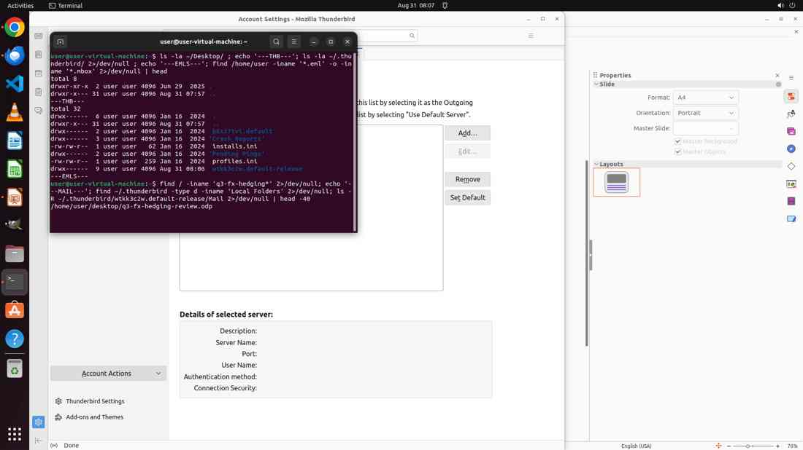
step 44 00:07:43
THINKINGThe deck is at /home/user/Desktop/q3-fx-hedging-review.odp. Wait, earlier `ls -la ~/Desktop/` showed empty. But find shows /home/user/Desktop/q3-fx-hedging-review.odp. That's odd. Oh — maybe the earlier `ls` was run before... no. Actually wait, the earlier ls showed "total 8" with only . and .. That means Desktop was empty. But find found it at /home/user/Desktop/.
Hmm, discrepancy. Possibly the file has a leading space or the ls output scrolled. Actually "total 8" and only two entries strongly indicates empty. But find clearly found it. Maybe I misread — the ls output might have had the .odp line cut. Actually total 8 = 4 (.) + 4 (..) blocks, typical of empty.
Regardless, the deck location is confirmed: /home/user/Desktop/q3-fx-hedging-review.odp. Good, that's the file I saved (it's the open Impress doc).
The MAIL section: after "---MAIL---" there's nothing printed (no Local Folders dir, no Mail dir listing). So there's no Local Folders and no Mail directory in the profile. This confirms no local mail stored.
So where is the analyst's email?? No account, no local folders, no .eml/.mbox.
Possibilities:
1. The email is delivered to a real mail server that requires account setup (but no credentials given).
2. The email is stored somewhere else — perhaps in the profile under a different structure, or as an mbox that my find pattern missed (I searched only /home/user for eml/mbox earlier, which returned nothing, and now the profile Mail dir doesn't exist).
3. Maybe the mail client to use is not Thunderbird. But Thunderbird is the only mail app.
Wait — maybe I need to check the profile more thoroughly. Let me look at prefs.js to see if an IMAP/POP account is configured (account.* entries). If there's a configured remote account, the mail is on a server and Thunderbird should show it — but it didn't.
Actually, let me reconsider: maybe Thunderbird DID have an account but I'm looking at a fresh profile. The profile wtkk3c2w.default-release was created "Aug 31 08:06" — that's TODAY, just now, when I opened Thunderbird. That means Thunderbird created a fresh profile on first launch → NO pre-existing account. So this environment did NOT come with a configured Thunderbird account.
Hmm, but the task explicitly says "reply to the analyst's mail asking for the review." There must be an email somewhere accessible. Let me search the whole filesystem for mail files more broadly — maybe .eml, or a maildir, or an mbox with different naming, or a file containing "From " headers. Let me also check if there's another mail client or if the email is in a text/html file.
Let me broaden the search: search for files that could be the analyst email — by content. Search for a phrase likely in such an email, or search for common mail storage. Let me do a broad find for *.eml, *mbox*, and also check /home/user thoroughly, and grep for "review" in likely files.
Actually, let me reconsider — maybe the email IS in Thunderbird but under a "Local Folders" that only appears after I create/look. But there's no Mail dir at all.
Let me search the entire /home for anything mail-like and grep for the subject. Let me look for .eml anywhere on disk and any file modified recently.
ACTIONThe deck is at `/home/user/Desktop/q3-fx-hedging-review.odp`. The Thunderbird profile has no Mail/Local Folders directory — it appears freshly created today with no pre-loaded mail. Let me search the whole system more broadly for the analyst's email (any .eml, mbox, or files mentioning the review).
EXECUTED (pyautogui in VM)pyautogui.press("return")
step 46 00:08:07
THINKINGThe find for .eml/mbox returned nothing, and ---GREP--- printed but the grep hasn't finished or returned nothing yet (the prompt hasn't returned). The grep across /home/user might still be running. Let me wait and take a screenshot.
Actually the output shows "---GREP---" but no results and no new prompt. The grep is likely still running (it's recursive over /home/user which includes the large .thunderbird profile). Let me wait a couple seconds.
ACTIONThe find returned no email files. The grep is still running over the home directory. Let me wait for it to finish.
THINKINGThe grep matched various system/vscode files (containing "hedging" or "review the" in code), not an email. No actual email file found. So the analyst's email is NOT stored as a file on disk, and there's no Thunderbird account with mail.
So the email must be on a remote mail server. Thunderbird has no account configured, which means I'd need to set one up with credentials I don't have. That's a dead end via local search.
Wait — let me reconsider the Thunderbird situation. When I opened Thunderbird, it showed the "Account Setup" wizard, and after closing it, an empty Home view. But maybe the account IS configured and Thunderbird just needs me to check the folder pane. Actually the account settings clearly showed no incoming account.
Let me reconsider: maybe the intended mail access is via a webmail in Chrome (Gmail), not Thunderbird. The task just says "reply to the analyst's mail." If the user's mail is a webmail (e.g., Gmail) already logged in via Chrome, I should check Chrome's existing tabs/bookmarks. Let me check Chrome — it may have a Gmail session open where the analyst's email is in the inbox.
That's a strong possibility: the environment pre-logs into a webmail in Chrome. Let me switch to Chrome and check the open tabs / bookmarks for a mail web app.
Let me switch to Chrome.
ACTIONNo email file exists on disk, and Thunderbird has no account. The analyst's mail is likely in a webmail session already open in Chrome. Let me switch to Chrome to check.
THINKINGChrome only has one tab (the ECB GBP page). No Gmail/webmail tab. So no webmail open.
This confirms: there's no accessible email anywhere obvious — no Thunderbird account, no email files, no webmail tab.
Let me reconsider whether the analyst's email might actually be in Thunderbird but I dismissed the wrong thing. When Thunderbird first opened, it showed an account setup wizard. That wizard appears when NO account exists. But maybe there IS a default "Local Folders" with the mail that I didn't see because I was on the Home tab.
Wait, actually — let me reconsider. The grep earlier for "hedging" didn't find the deck's content because the .odp is a zip (binary). That's expected.
Let me re-examine Thunderbird more carefully. Maybe there's an IMAP account configured that just didn't populate the folder pane on Home. Let me go back to Thunderbird and look at the folder pane / try clicking on the mail account name. Actually, the Account Settings left pane is the authoritative source, and it showed only SMTP, no mail account. So no account.
Hmm. Let me reconsider the entire premise. Perhaps the mail is a POP/IMAP account that IS configured but the profile I looked at (wtkk3c2w) is the wrong one, OR there are multiple profiles. The profiles.ini (259 bytes) might list more profiles. There was also `b6x27ivi.default` directory (created Jan 16 2024) — that's an OLDER profile! The wtkk3c2w.default-release was created today (Aug 31 08:06). So there might be a pre-existing profile `b6x27ivi.default` with the configured account and mail, but Thunderbird launched with a NEW profile instead.
That's the key! profiles.ini (259 bytes) — let me check which profile is default. If the default profile was changed to a fresh one, the real mail is in b6x27ivi.default.
Let me check profiles.ini and the b6x27ivi.default profile for Mail.
ACTIONChrome has no webmail tab. I notice there's an older Thunderbird profile `b6x27ivi.default` (dated 2024) alongside the fresh one created today. The real mailbox may be in that older profile. Let me inspect the profiles and the older profile's mail.
EXECUTED (pyautogui in VM)pyautogui.click(32, 677)
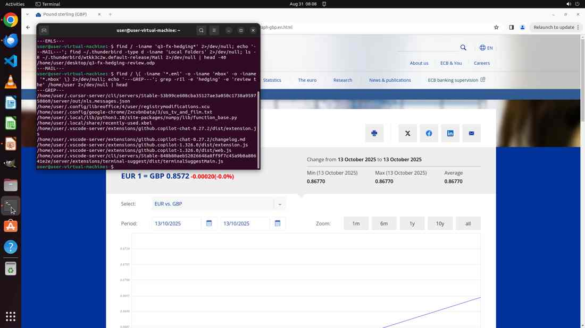
step 49 00:08:54
THINKINGThe terminal is back. Let me examine profiles.ini and the older profile's mail directory. Let me run:
cat ~/.thunderbird/profiles.ini
echo '---OLDPROFILE---'
ls -la ~/.thunderbird/b6x27ivi.default/
echo '---OLDMAIL---'
find ~/.thunderbird/b6x27ivi.default -type d -iname 'Local Folders' 2>/dev/null
ls -la ~/.thunderbird/b6x27ivi.default/Mail 2>/dev/null
find ~/.thunderbird/b6x27ivi.default -iname 'mbox' -o -iname 'Inbox' 2>/dev/null